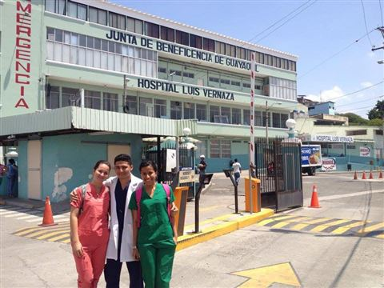
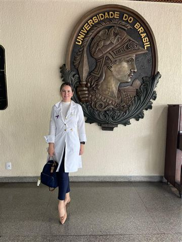
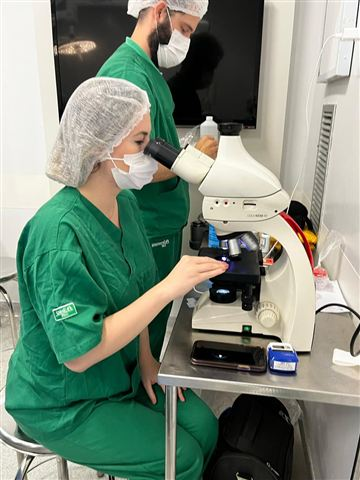

Dermatóloga clínica, quirúrgica y estética
María Belén Mendoza Macías
Médica de la Universidad de Guayaquil, con posgrado en Dermatología en la Policlínica Geral do Rio de Janeiro y formación en dermatopatología con el Dr. Thiago Jeunon.
Su formación en dermatopatología le permite estudiar las biopsias al microscopio, así el diagnóstico y el tratamiento quedan en las mismas manos. Ha presentado trabajos en congresos de dermatología en Brasil, España y Singapur.
- Clínica
- Quirúrgica
- Estética
- Dermatopatología
Formación
De Guayaquil a Río de Janeiro: medicina, especialidad y dermatopatología.
-
2010–2017
Médica
Universidad de Guayaquil, Facultad de Ciencias Médicas
-
2016
Médica pasante en dermatología
Centro Dermatológico Loayza, Clínica Panamericana, Guayaquil
-
2017–2018
Internado rotativo
Hospital Abel Gilbert Pontón, Guayaquil

-
2018–2020
Médica residente
Jefa de guardia en el Hospital General Rodríguez Zambrano de Manta y en el Hospital Básico de San Pablo
-
2020–2023
Posgrado en Dermatología
Servicio de Dermatología de la Policlínica Geral do Rio de Janeiro, Brasil. Sociedade Brasileira de Dermatologia (RJ) e Instituto de Pós-Graduação Médica Carlos Chagas.

-
2022
Pasantía en Dermatología
Instituto Nacional de Câncer (INCA), Río de Janeiro
-
2023–2024
Fellowship en Dermatopatología
Con el Dr. Thiago Jeunon, Río de Janeiro

Sociedades científicas
Es miembro de sociedades de dermatología y dermatopatología de Ecuador, Brasil e Iberoamérica.
-
CILAD
Colegio Ibero-Latinoamericano de Dermatología
CILAD
-
SBD
Sociedade Brasileira de Dermatologia
SBD
-
SILADEPA
Sociedad Ibero-Latinoamericana de Dermatopatología
SILADEPA
-
SED
Sociedad Ecuatoriana de Dermatología
SED
Trabajos presentados
Una selección de los 11 casos clínicos y pósteres que ha presentado en congresos internacionales.
-
Rede invertida e sua importância no diagnóstico do melanoma: relato de caso
Autora principal. E-póster, Reunión Anual de Dermatólogos Latinoamericanos (RADLA), Curitiba, 2023.
-
Síndrome de Brooke-Spiegler: reporte de caso
Autora principal. E-póster, 25.º Congreso Mundial de Dermatología, Singapur, 2023.
-
Melanoma desmoplásico simulando un dermatofibroma
Coautora. E-póster, RADLA, Curitiba, 2023.
-
Síndrome de Gorlin-Goltz: descripción de un caso clínico
Coautora. XXIII Congreso CILAD, Madrid, 2022.
Congresos
Algunos de los congresos a los que ha asistido.
- 2026 XLIII RADLA, Buenos Aires
- [año] XI Congreso Ecuatoriano de Dermatología
- 2023 25.º Congreso Mundial de Dermatología, Singapur
- 2023 40.ª RADLA, Curitiba
- 2023 33.º Congreso Brasileño de Cirugía Dermatológica, Río de Janeiro
- 2022 75.º Congreso de la Sociedade Brasileira de Dermatologia, São Paulo
Currículum completo
Formación, experiencia, publicaciones y cursos de la Dra. María Belén Mendoza Macías.